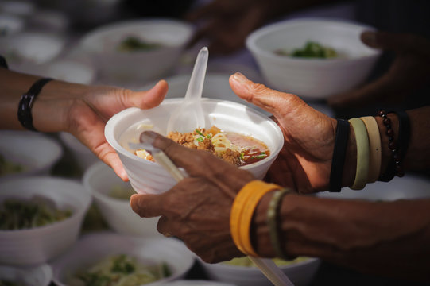

De oplossing
Surplus Meals.
Drie problemen. Eén oplossing. Elke maaltijd telt.
01
Gered voedsel
Reststromen van boeren en groothandels als basis. HACCP-gecertificeerd en volledig traceerbaar. Elke maaltijd begint met voedsel dat anders was afgevoerd.
02
Mensen met een verhaal
Koks met afstand tot de arbeidsmarkt. Echte werkervaring, echte begeleiding, echte kansen. Geen vrijwilligerswerk — een echte baan.
03
Afhaalmaaltijd
Verse avondmaaltijd, €9,50, klaar om op te warmen. Afhaal in Amsterdam op een centrale locatie. Geen abonnement, geen verplichting.
04
Meetbare impact
Kg gered voedsel en CO2 bespaard per maaltijd. Geen vage claims — cijfers per klant, transparant en eerlijk.


